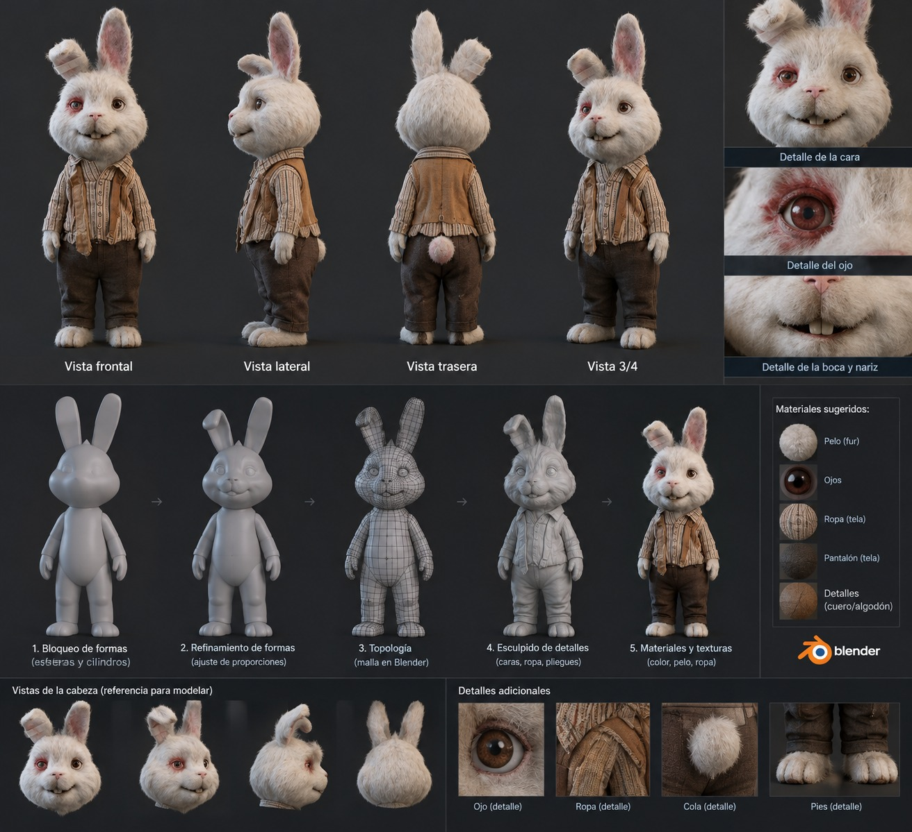

Interactividad
El usuario decide qué ver y en qué orden: botones, menús, enlaces.
Proyecto informativo · Ingeniería de Sistemas
Un sistema multimedia interactivo sobre texto, imagen, animación, video y audio, aplicado a un cortometraje de un conejo modelado en Blender.
Asignatura: Sistemas Multimedia · Electiva · Presencial · 5 créditos · 100 horas

Un sistema multimedia integra, en un mismo producto digital y de forma coordinada, varios tipos de información: texto, gráficos, imágenes, animación, video y sonido. El usuario no solo mira: interactúa.
Pulsa una tarjeta para ver cómo se usa en nuestro proyecto.
El usuario decide qué ver y en qué orden: botones, menús, enlaces.
Los medios se combinan en un solo producto con diseño coherente.
Toda la información se almacena y procesa en formato digital.
Estructura no lineal: se salta entre contenidos relacionados.
Audio, imagen y movimiento se coordinan en el tiempo.
Se distribuye en web, escritorio, móvil o video.
Requisitos recomendados para el proyecto: PC con GPU dedicada, 16 GB de RAM y almacenamiento SSD.
El programa de la materia cita DreamWeaver, Flash, 3DMax y Camtasia. Estas son sus alternativas actuales usadas en el proyecto:
| Función | Herramienta clásica | Herramienta del proyecto |
|---|---|---|
| Modelado y animación 3D | 3DMax | Blender |
| Edición de video | Camtasia | DaVinci Resolve / Kdenlive |
| Audio y música | — | Audacity, LMMS |
| Imagen y texturas | Photoshop | Krita / GIMP |
| Página web | DreamWeaver | VS Code / Antigravity + HTML, CSS, JavaScript |
| Animación interactiva | Flash | JavaScript (esta página) |
| Asistente por prompts | — | opencode + Blender MCP |
Los conceptos de Flash tienen equivalente directo en Blender. Pulsa un concepto.
El programa menciona ActionScript (lenguaje de Flash). Como Flash fue descontinuado, esta página usa JavaScript, su descendiente directo (ambos son ECMAScript) y funciona en cualquier navegador.
class Slide.addEventListener('click', …).requestAnimationFrame.<video> y <audio>.localStorage (guardamos tu último slide).boton.addEventListener('click', () => {
contador++;
salida.textContent = contador;
});Cada clic mueve al conejo: botón → evento → animación.
Cortometraje animado en 3D con un conejo realista y caricaturesco, vestido con ropa vieja y gastada, de aspecto tierno e inquietante a la vez. El estilo toma como inspiración el corto Save Ralph, pero con personaje, guion y arte propios.
Pulsa cada paso o usa los botones para recorrerlo.
Coloca tu pista en web/assets/audio.mp3 para escucharla aquí:
Coloca el corto en web/assets/corto.mp4:
| 85–100 | Estratégico (A) |
| 70–84 | Autónomo (A) |
| 51–69 | Resolutivo (A) |
| 25–50 | Receptivo (R) |
| 1–24 | Preformal (R) |
Integrantes: ______________________ · Docente: ______________________